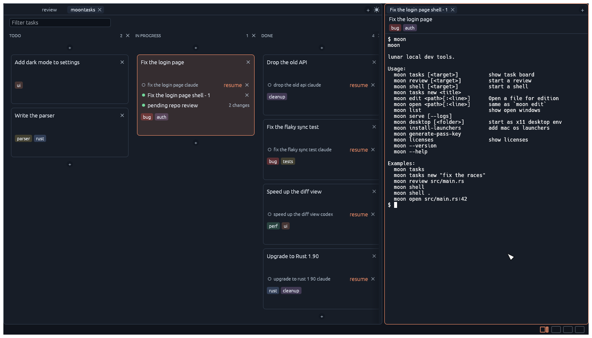
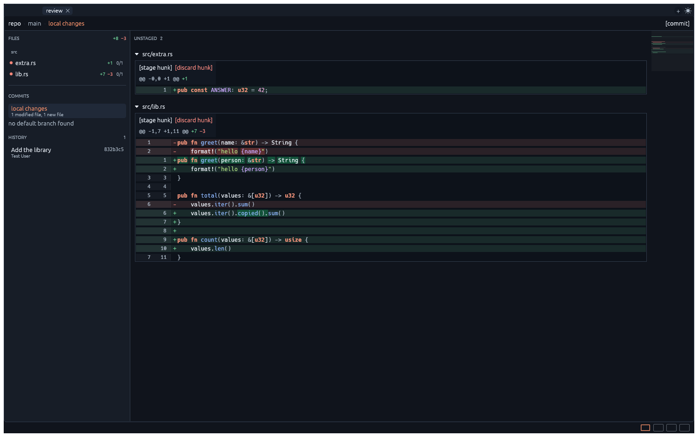

moon-dev-tools is the work environment that will hopefully restore focus to your agentic software development, let you ship hundreds of tasks, and review your code at lunar speed.

What is moon-dev-tools?
You are probably dealing with messy terminal tabs and hundreds of disorganized agent conversations. moon-dev-tools is the solution to this problem.
moon-dev-tools is essentially an operating system for agentic software development. It lets you group shells and agents in tasks. If you know how to use a task board and how to use a terminal, you already know how to use moon-dev-tools.
Once a task is ready for review, you can review code straight from moon, ask agents to change code, then commit and push.

Use remotely
While it runs natively, moon-dev-tool uses a client/server model letting you do anything remotely from a web browser, using a wasm version of the app.
Run moon serve in a repo on your server and open the link it prints.
The server listens on localhost only. Reach it through an SSH tunnel, or start a Cloudflare tunnel from the Tools menu.
Tools > Cloudflare > Start Tunnel
Under the hood
- Rust - native performance and memory safety.
- egui - a responsive, immediate-mode native interface.
- libghostty - Ghostty's VT engine, with scrollback, reflow, and links.
Reusable pieces
A few parts of moon-dev-tools could be helpful in other projects:
egui_frames- Tabs, splits, and draggable panes with a serializable layout.
egui_tty- An egui terminal widget on Ghostty's VT engine.
egui_moon_editor- A code editor with LSP support, completion, line numbers, search, selections, and jump to definition.
Installation
Install the moon dev tools suite: MoonTask, MoonReview, and MoonShell.
curl -fsSL https://raw.githubusercontent.com/antoineMoPa/moon-dev-tools/main/install.sh | sh
Then open any folder and run moon.